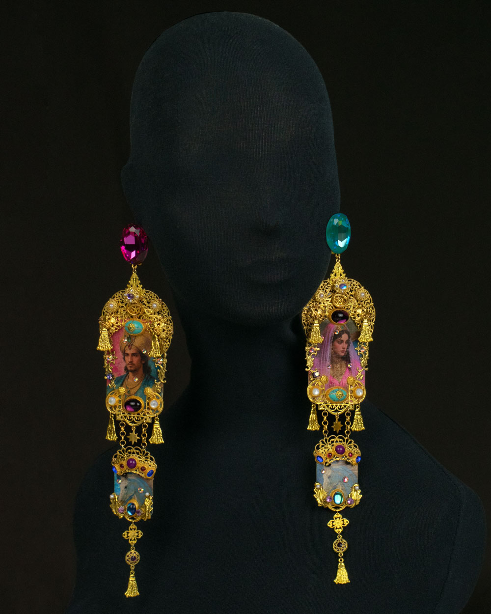
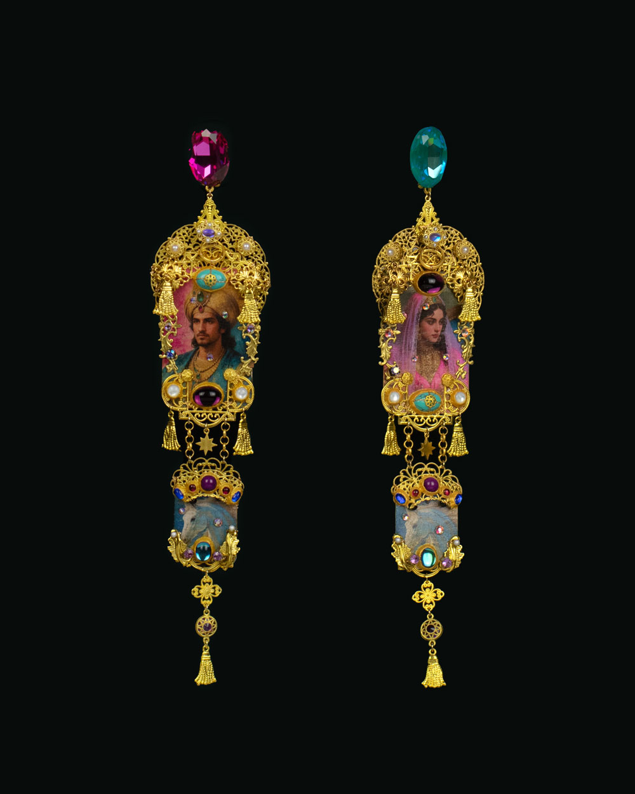

Inspired by Orientalist Dreams, Asymmetrical Statement Earrings “1001 Nights — An Irresistible World of Excess”
An endless journey between beauty and excess — the myth that refinement is never enough, that finery must be saturated to be irresistible.
Stylized Ceremonial Asymmetrical Earrings · One of a Kind · Paris 2026
The artwork consists of two interconnected elements — a single narrative unfolding across two supports, each completing the other.
Together, these elements create a narrative composition where craft traditions converge into a single reawakened form.
Measurements:
Pendant (excluding clasp): W=6 cm, H=23 cm
Clasp: clip clasp with stud
Clasp embellishment: oval rhinestone, 18 × 25 mm
Techniques used: Mixed media
Description of materials:
Brass stampings, gold-tone filigree components, faceted glass stones in turquoise, purple, and teal, pearl accents, dangling gold stars. The paper imagery is hand-treated to replicate the look of aged, crackled oil paintings.